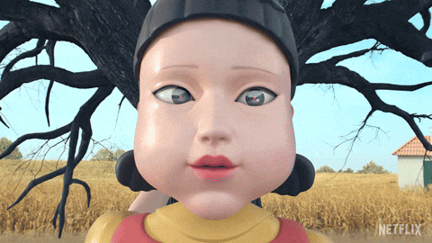
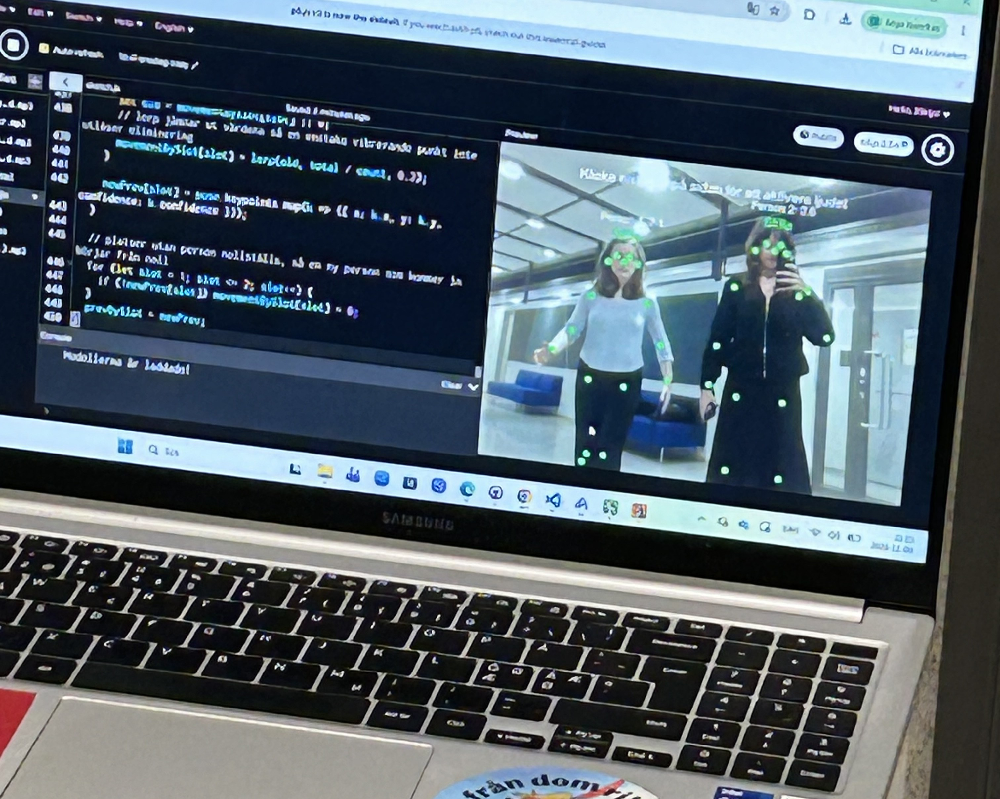
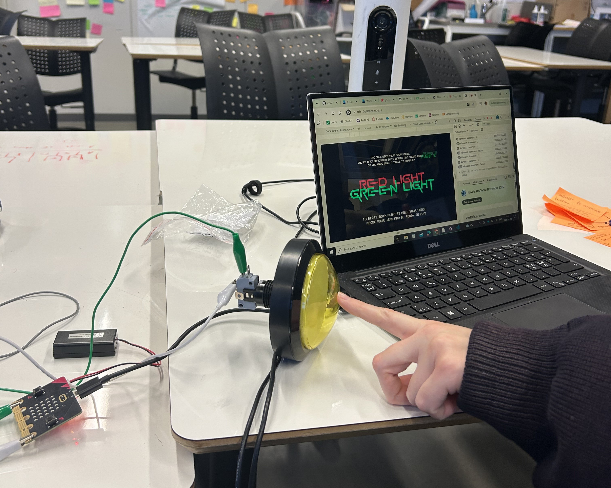
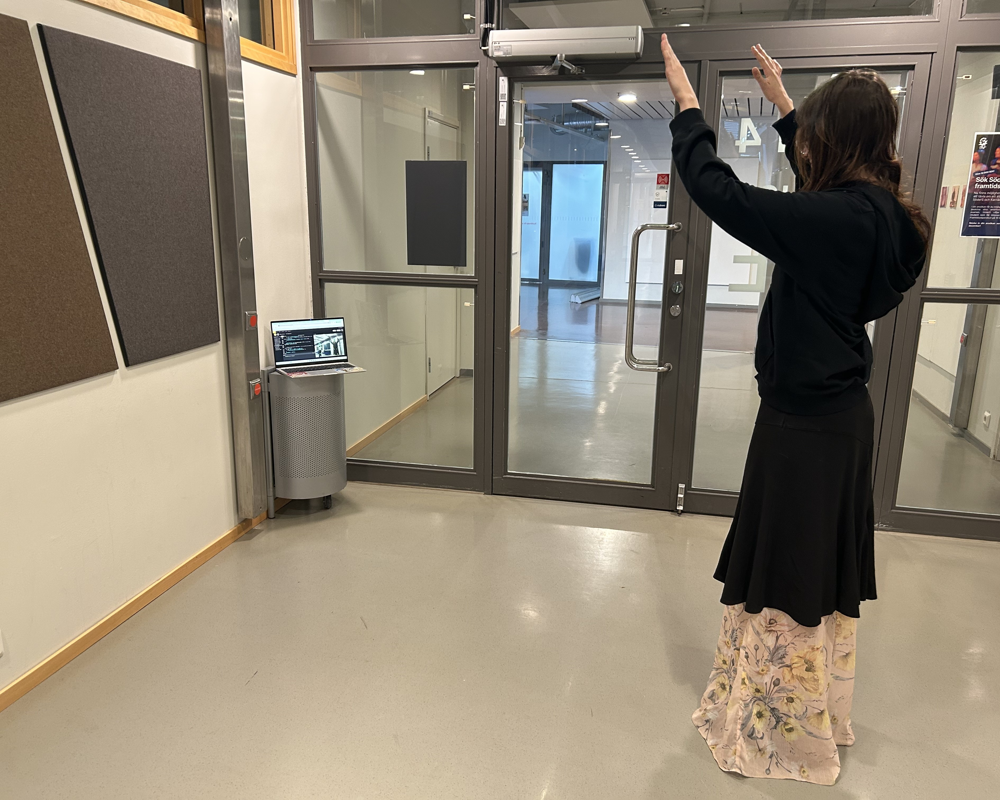
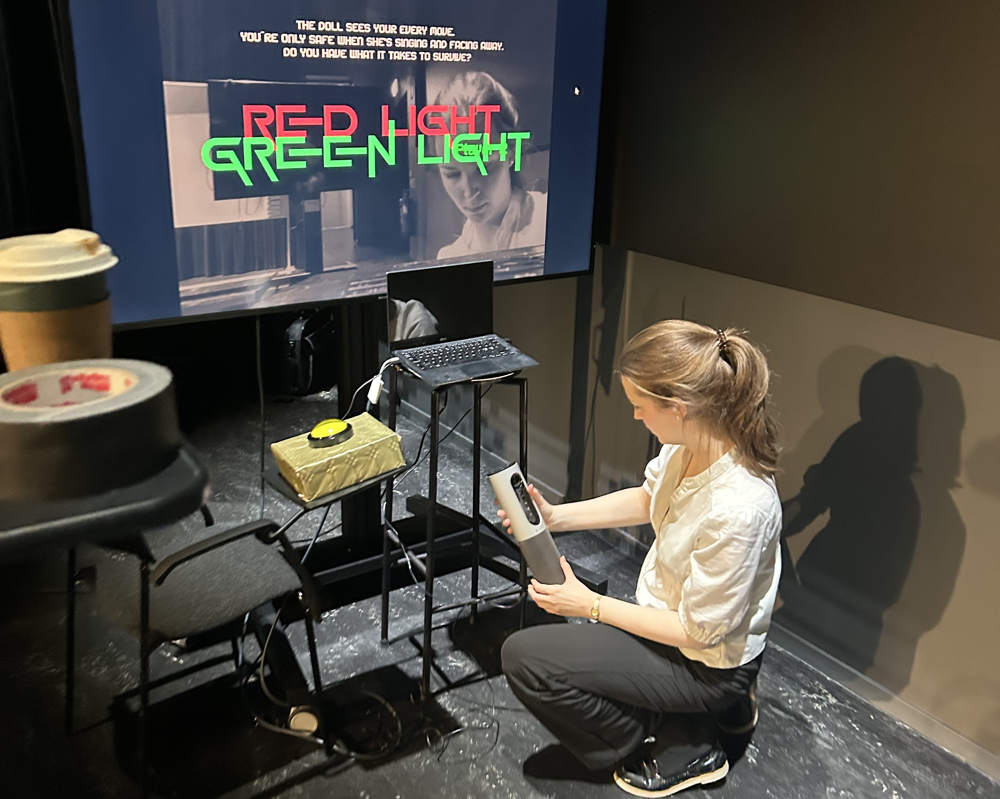
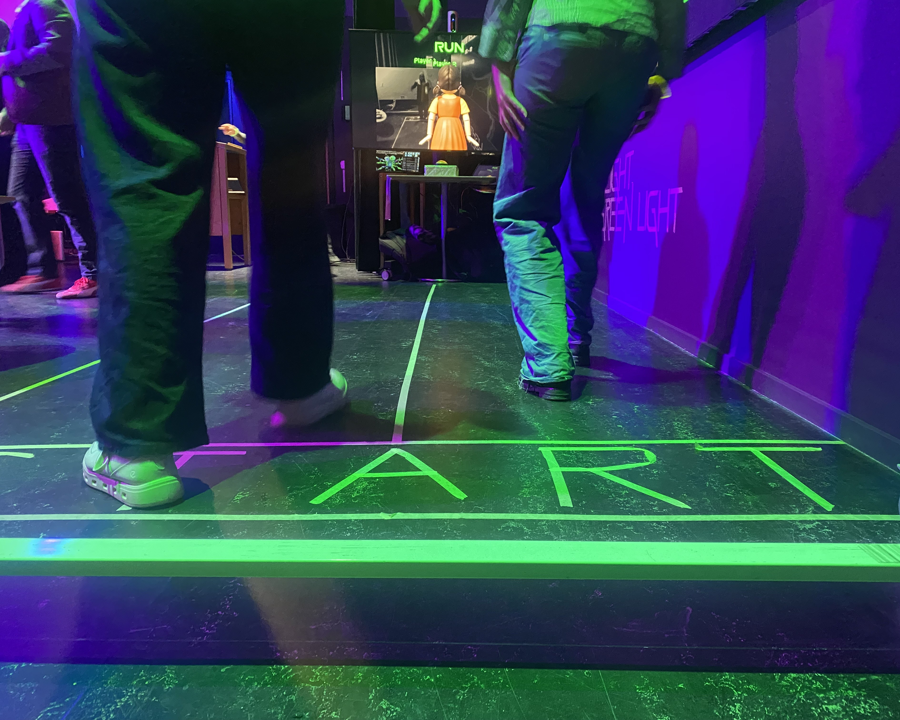

Klara Johansson
It, Medier & Design Kreativ programmering slutprojekt (skapare av spelet: Klara Johansson & Lina Persson)
Jag gillar att skapa visuella upplevelser som väcker olika stämningar och känslor. I projekt väljer jag ofta ämnen som ger mig drivkraft att utvecklas och nå mina mål, som i detta projekt var ett interaktivt spel något som gjorde det roligt och att jag lärde mig snabbare.

Om projektet
Red Light Green Light
Vårt projekt är ett interaktivt multimediaspel inspirerat av den stora Netflixserien Squid Game. I spelet tävlar två deltagare mot varandra att snabbast ta sig fram och trycka på en knapp samtidigt som de ska undika att bli sedda av en sjungande docka. Med hjälp av ljus, ljud, bild och bodytracking kastas spelarna in i en livsfarlig barnlek som är spännande, roligt och lite läskigt.
Bodytracking
Att skapa Red Light Green Light har varit utmanande och kul. Vi började med att jobba på bodytrackern då det la grunden till att vårt spel skulle fungera. Nedan kan ni se projektet i tidigt stadie där bodytrackern testades och kunde detektera alla kroppens leder.

Installering av knapp
För att förstärka känslan av spelet valde vi att installera en stor arkad knapp som vi kopplade till en microbit.

Testning
Vår arbetsproces bestod mycket av testning av spelet för att alla delar skulle fungera med varandra. Här har vi lyckats skapa vår grundstruktur och fått med alla delar som behövdes för att spelet skulle fungera, med hjälp av att testa kunde vi utveckla spelet ännu mer.

Installation
Så här såg installationen ut av vårt spel där vi kopplade knapp, tv, webbkamera, högtalare och även ett antal strålkastarlampor i salen.

Algo Rave
Här är en bild under ravet där andra fick prova på spelet!
